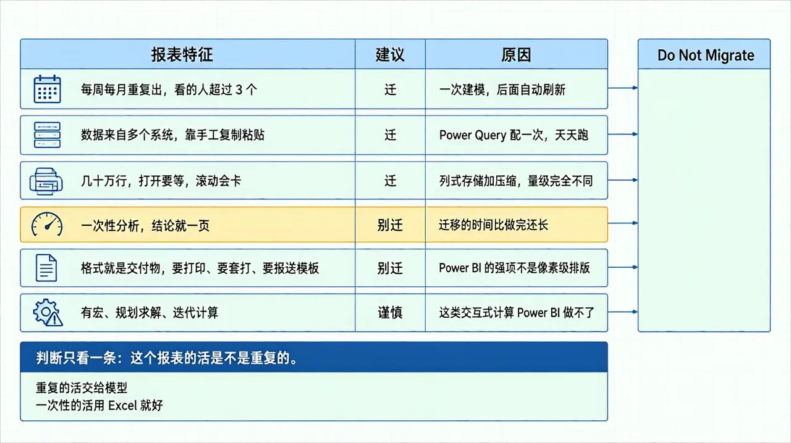
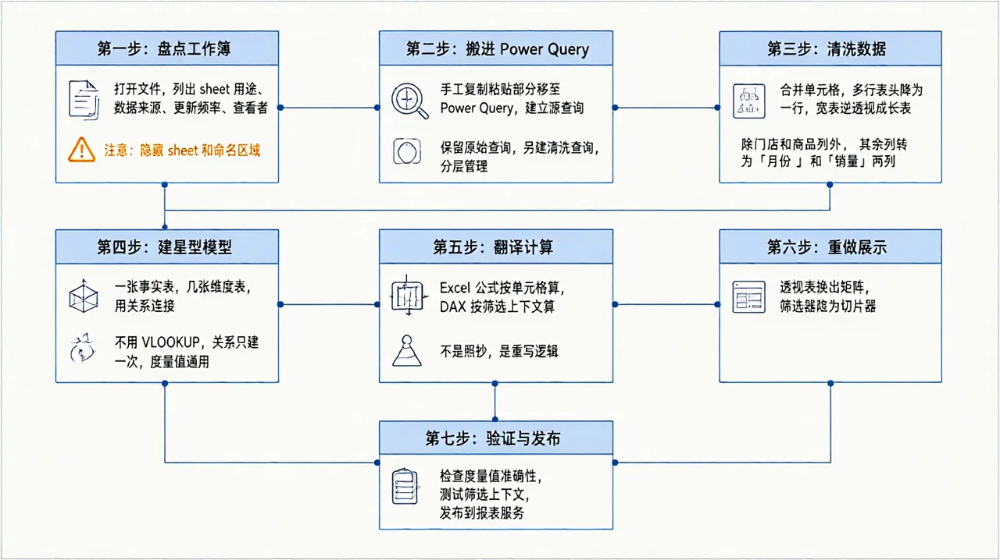
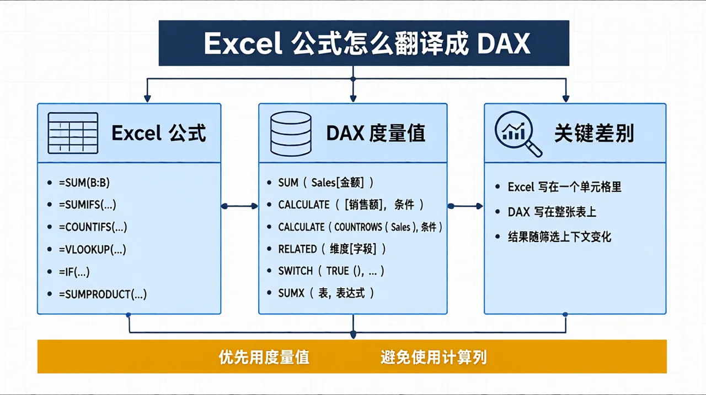
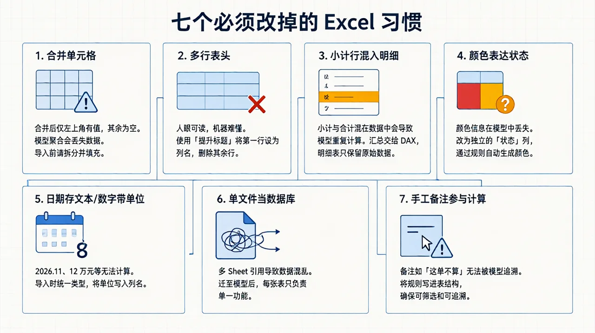

把 Excel 报表迁到 Power BI：迁移清单与避坑指南
先给结论：值得迁的是重复出报表那部分活，不是表格。附清单、公式翻译和 7 个要改的习惯。
先说结论：Excel 报表迁 Power BI，值得迁的不到一半。
多数人把「迁移」理解成把那张表原样搬到 Power BI 里。方向就错了。该迁的是每天重复出数的那部分工作、每月手工汇总的那几张底表、七八个人同时打开就卡的那个文件。至于那张配色精致的汇总页，重做往往比搬过去快。
这篇给三样东西：一张判断表，告诉你什么该迁什么别迁；一份迁移清单，按顺序做不会乱；一张公式对照表，Excel 的老写法在 DAX 里怎么写。最后讲七个必须改掉的 Excel 习惯。
一张表判断：你的报表该不该迁
Excel 报表里通常混了三层东西：数据、计算、展示。迁 Power BI，是把这三层拆开，分别处理。
| 报表特征 | 建议 | 原因 |
|---|---|---|
| 每周每月重复出，看的人超过 3 个 | 迁 | 一次建模，后面自动刷新 |
| 数据来自多个系统，靠手工复制粘贴 | 迁 | Power Query 配一次，天天跑 |
| 几十万行，打开要等，滚动会卡 | 迁 | 列式存储加压缩，量级完全不同 |
| 一次性分析，结论就一页 | 别迁 | 迁移的时间比做完还长 |
| 格式就是交付物，要打印、要套打、要报送模板 | 别迁 | Power BI 的强项不是像素级排版 |
| 有宏、规划求解、迭代计算 | 谨慎 | 这类交互式计算 Power BI 做不了 |
判断只看一条：这个报表的活是不是重复的。重复的活交给模型，一次性的活用 Excel 就好。

迁移清单：七步，顺序别乱
第一步：盘点工作簿
把文件打开，列出每张 sheet 的用途、数据从哪来、多久更新一次、谁在看。这一步看着笨，但能省掉后面一半返工。
注意两件事。隐藏的 sheet 和命名区域经常藏着关键公式；外部链接指向的文件可能已经不在原位置了。
第二步：把数据层搬进 Power Query
手工复制粘贴的部分，是迁移收益最大的地方。把源文件接到 Power Query，建一个查询。
为什么先做这层？因为后面所有计算都建立在它上面。数据层不稳，DAX 写得再漂亮也是错的。
注意保留原始查询，另建一个清洗后的查询，两层分开。以后源数据变了，只改清洗层，模型和度量值不用动。
第三步：清洗
Excel 的表格是给人看的，Power BI 的模型是给机器算的。这中间必须清洗。
最常见的三个动作：
- 合并单元格拆开，每行补齐
- 多行表头降成一行，多余的行删掉
- 宽表逆透视成长表，一个指标一列
逆透视的 M 写法：
= Table.UnpivotOtherColumns ( 源, {"门店", "商品"}, "月份", "销量" )
这行的意思是：除了门店和商品两列，其余列全部变成两列——一列叫「月份」放列名，一列叫「销量」放数值。透视表能用的宽表，进模型前必须先转成长表。
第四步：建星型模型
一张事实表，几张维度表，用关系连起来。
为什么不用 VLOOKUP？关系只建一次，所有度量值都能用，改维度表不用改公式。VLOOKUP 是每张表各写一遍，改一次要找一整天。
注意粒度：事实表一行代表什么，必须写清楚。是一张订单，还是一行订单明细，决定了后面所有金额能不能加。
第五步：翻译计算
Excel 的公式按单元格算，DAX 按筛选上下文算。这一步不是照抄，是重写。下一节给对照表。
第六步：重做展示
透视表换成矩阵，筛选换成切片器，条件格式换成度量值驱动的颜色。原来靠颜色区分的状态，改成规则。
第七步：新旧对账
两边同时跑两周。每天抽三个数对一下：总额、按维度拆的明细、边界情况。对不上就查，别等切换后才发现。

Excel 公式怎么翻译成 DAX
先记住一个区别：Excel 里一个公式写在一个单元格里，DAX 里一个度量值写在整张表上，结果随筛选变。
| Excel 写法 | DAX 写法 | 关键差别 |
|---|---|---|
=SUM(B:B) |
SUM ( Sales[金额] ) |
一样，但 DAX 只算当前筛选范围 |
=SUMIFS(...) |
CALCULATE ( [销售额], 条件 ) |
条件写进筛选参数 |
=COUNTIFS(...) |
CALCULATE ( COUNTROWS ( Sales ), 条件 ) |
计数用行数 |
=VLOOKUP(...) |
RELATED ( 维度[字段] ) |
有关系的表直接取 |
=IF(...) 多层嵌套 |
SWITCH ( TRUE (), ... ) |
嵌套超过三层就该换 |
=SUMPRODUCT(...) |
SUMX ( 表, 表达式 ) |
逐行算再汇总 |
| 辅助列算占比 | DIVIDE ( [分子], CALCULATE ( [分母], ALL ( 表 ) ) ) |
占比做成度量值 |
几个具体例子。
基础求和：
销售额 = SUM ( Sales[金额] )
带条件的求和，对应 SUMIFS：
华东销售额 =
CALCULATE (
[销售额],
Geography[区域] = "华东",
'Date'[年份] = 2026
)
CALCULATE 的作用是改筛选上下文：先把区域限定在华东、年份限定在 2026，再算销售额。这是 SUMIFS 在 DAX 里的等价写法，而且不用为每个条件复制一个公式。
跨表取字段，对应 VLOOKUP：
产品类别 = RELATED ( 'Product'[类别] )
前提是两张表之间有有效关系。没有关系时用 LOOKUPVALUE，但它比关系慢，能建关系就别用它。
占比：
销售占比 =
DIVIDE (
[销售额],
CALCULATE ( [销售额], ALL ( 'Product' ) )
)
分母用 ALL 去掉产品筛选，得到总额。Excel 里这通常要一个辅助列，DAX 里一个度量值就够了。
一个取舍：能写成度量值就别写计算列。计算列占内存、只在刷新时更新；度量值实时算、不占空间。只有要放进行标签或切片器的字段，才需要计算列。

七个必须改掉的 Excel 习惯
- 合并单元格。合并之后只有左上角有值，其余是空的。模型里一聚合就少数据。导入前先拆分填充。
- 两行以上的表头。人看着清楚，机器读不懂。用「提升标题」把第一行变成列名，其余删掉。
- 小计行混在明细里。一行小计、一行合计，混在数据中间。模型会把它当明细一起加，数字直接翻倍。汇总交给 DAX，明细表只留明细。
- 用颜色和加粗表达状态。红色代表超期、黄色代表预警——这些信息在模型里全丢了。改成单独的「状态」列，颜色由规则生成。
- 日期存成文本、数字带单位。
2026.11、12 万元、1,234 件，这些都不是数值，无法计算。导入时统一类型，单位写进列名。 - 一个文件当数据库用。十几个 sheet 互相引用，改一处全乱。迁到模型后，每张表只负责一件事。
- 手工备注参与计算。「这单不算」「这个客户特殊」，写在备注里，下次没人记得。规则要写进表里，能筛选、能追溯。
这七条不改，迁过去只是把错误换了个地方放。

常见问题
透视表能直接搬过去吗？
不能直接搬，但逻辑能复用。透视表的行、列、值，对应矩阵的行、列、值；筛选对应切片器。原来的计算字段要重写成度量值。
数据在共享盘或同事电脑上，能自动刷新吗？
能，但要满足条件。文件放 OneDrive 或 SharePoint，用云端连接；内网共享盘要装本地数据网关。放个人电脑上、机器一关就刷新失败，这不是 Power BI 的问题。
迁完还要不要保留原 Excel？
保留三个月。对账期用它兜底，也方便业务对照。三个月后归档，但别删——口径有争议时，原始文件是唯一证据。
要学 DAX 到什么程度？
会 SUM、CALCULATE、FILTER、DIVIDE 和 ALL，能覆盖大部分迁移场景。时间智能函数是第二层，用到再学。
我的判断
这件事的优先级，我给三档。
必迁：每周每月重复出、多人看、多源手工汇总的报表。这类迁完收益马上能看见——出数时间从半天变成点一下。
可选：单人用、结构简单、每月只看一次的报表。迁与不迁差别不大，看这个人愿不愿意学。
别迁：一次性分析、格式即交付物的报送表、带宏和规划求解的模型。硬迁的代价是花两周做一个还不如原来的东西。
还有一条判断：如果 Excel 里的问题不是工具问题，是口径问题，迁到 Power BI 只会把口径问题放大。同一张表两个人算出两个数，先解决定义，再谈迁移。
具体怎么拆数据层、怎么建模型，博客里按主题分过类。需要有人把现有工作簿盘一遍、给出迁移顺序的，属于服务里的评估环节，联系页可以约。